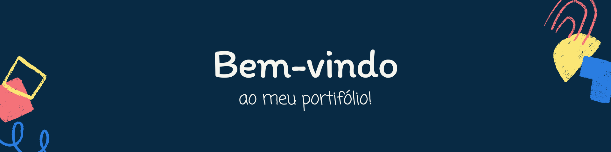

Bem-vindo ao Meu Portfólio!
Olá, eu sou Gabriel Trevisano, Sou um Programador apaixonado por transformar ideias em soluções inovadoras. Este é o espaço onde você pode explorar minhas habilidades, projetos e experiências que moldam minha jornada profissional.
Explore meu PortfólioPor que Escolher Meu Trabalho?
- Criatividade e Inovação: Meu trabalho é movido pela paixão por criar soluções únicas que atendem às necessidades de outros.
- Construindo o Futuro: Minha formação em Análise e Desenvolvimento de Sistemas e minha curiosidade, me torna preparado para enfrentar desafios complexos e oferecer resultados excepcionais.
- Compromisso: Cada projeto é abordado com atenção aos detalhes e uma busca constante pela excelência, garantindo que o produto final não apenas atenda, mas supere seus padrões de qualidade.
O Que Ofereço:
Desenvolvimento Web
Desde sites simples até plataformas complexas, minha abordagem é sempre focada em criar uma experiência de usuário fluida e impactante.
Desenvolvimento de Jogos
Criando realidades virtuais para players e mecanismos envolventes para a maior imersão em jogos
Manutenção de Computadores
Além de criar sistemas e jogos, trago um excepcional, a manutenção de computadores e notebooks